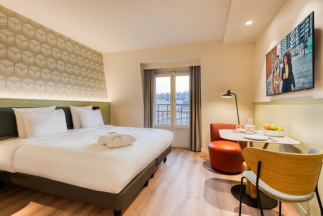
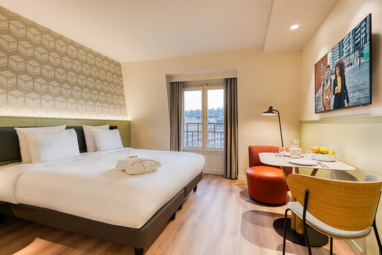

Citadines Tour Eiffel Paris "The rooms are spacious and clean, but what I loved most was the well-stocked kitchenette which included dishes, pots, pans, silverware, and everything you could need in a kitchen!"
"As for the room, the kitchenette was fully equipped with additional appliances (a tea kettle and espresso machine), and the sleeping accommodations were comfortable and cool (with AC)."
Citadines Les Halles Paris "The rooms are spacious and clean, but what I loved most was the well-stocked kitchenette which included dishes, pots, pans, silverware, and everything you could need in a kitchen!"
"As for the room, the kitchenette was fully equipped with additional appliances (a tea kettle and espresso machine), and the sleeping accommodations were comfortable and cool (with AC)."
Citadines Saint-Germain-des-Prés Paris
"The apartment part is that rooms come with a kitchenette (stove, microwave, fridge, coffeemaker, glasses & tableware) and you can request a separate bedroom."
"The small kitchenette’s utilities worked and did it’s function but were all on the older model side."
Citadines Place d'Italie Paris
"... tea in lobby was free 4.Store luggage for convenience if arrive early and want to explore before checking 5.Small kitchenette area equipped with microwave , two pilot burner, refrigerator, basic kitchen supplies."
"Well situated, with a well-equipped kitchenette."
 
